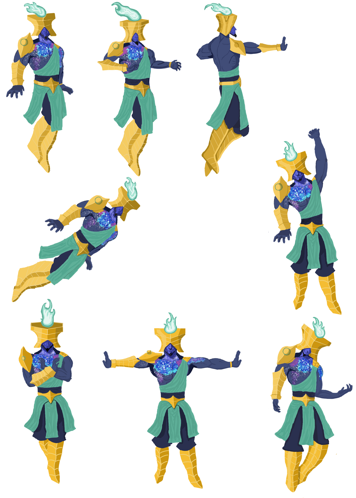

Eternal Arena
This was a group project done in collaboration with other courses, created in unity using C#. This is a platform fighter designed to focus more on consistency rather than the more variable gameplay usual to the genre.
I was responsible for programming a large portion of the player logic.
Creating some menus and menu navigation. In addition, I implemented the audio.

The main system of the game is when the player has lost all their hp, their opponent uses a super to finish them off.